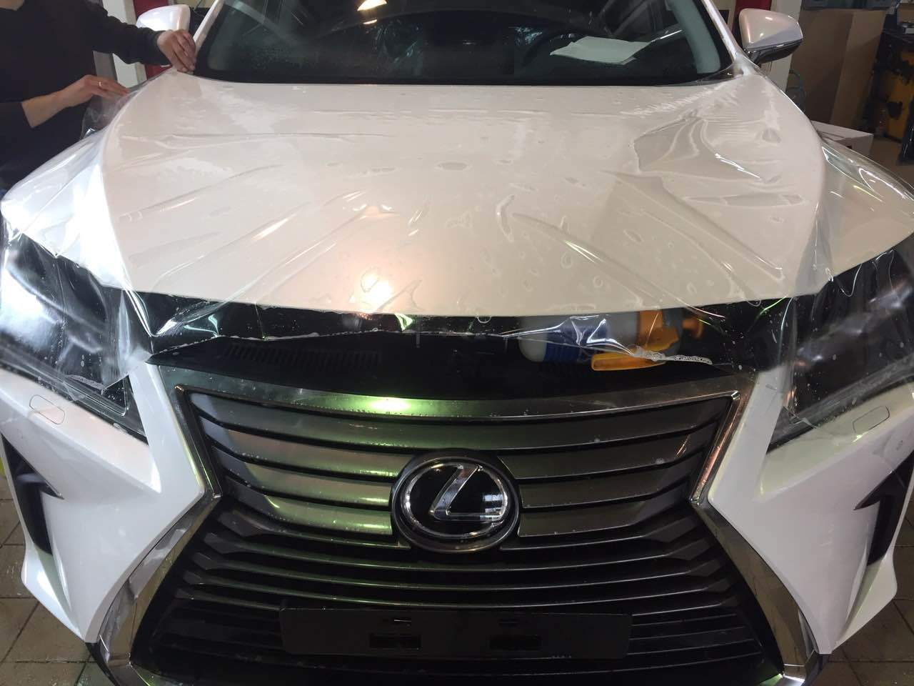
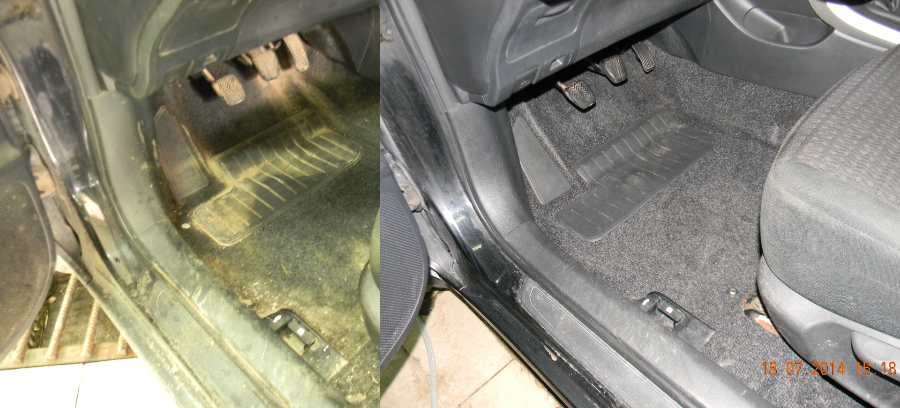
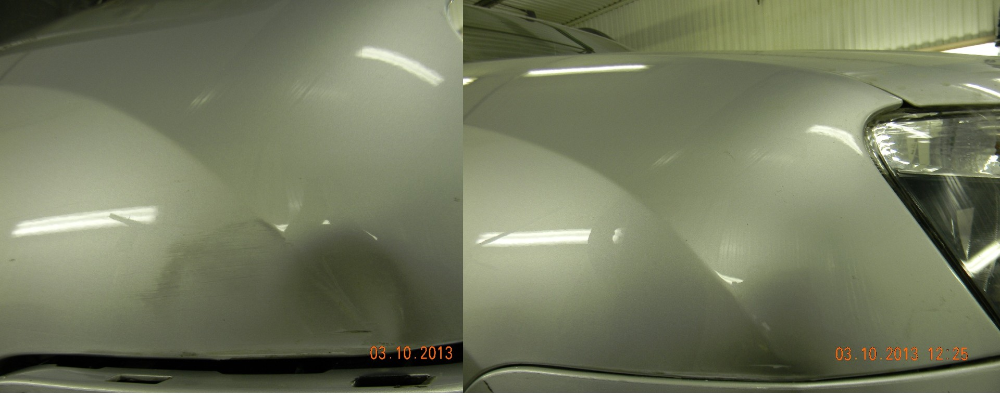
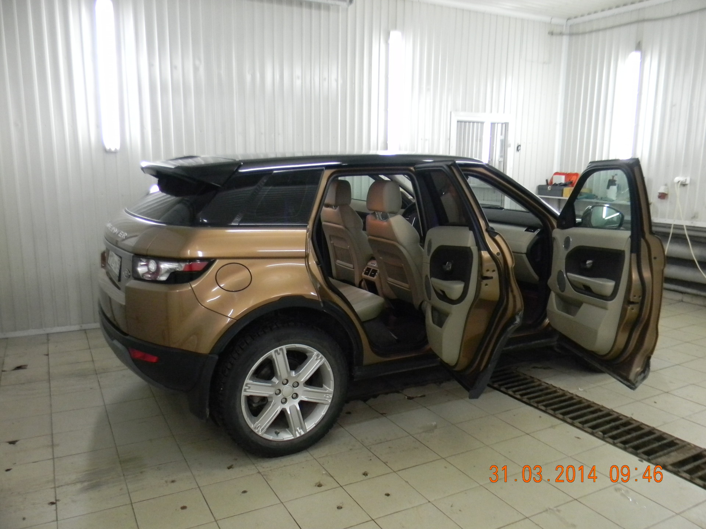
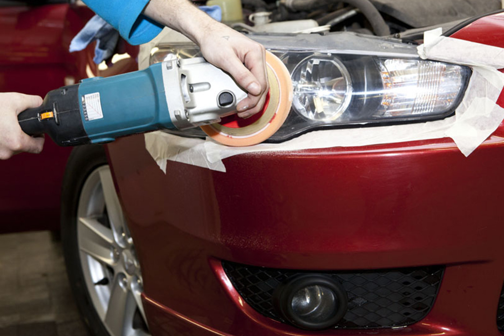

01 / УСЛУГА
AdVance
Защитное покрытие кузова
Защитное покрытие для выразительного блеска и сохранения внешнего вида автомобиля. Гарантия на покрытие — 3 года.
от 15 000 ₽
Полный каталог услуг студии: защита кузова и стёкол, уход за салоном, восстановление и стайлинг автомобиля.

Защитное покрытие для выразительного блеска и сохранения внешнего вида автомобиля. Гарантия на покрытие — 3 года.

Защитная плёнка помогает уберечь лакокрасочное покрытие от мелкого щебня, дорожного мусора и насекомых.

Гидрофобная обработка стёкол для защиты от грязи, дождя, пыли и снега. Технология на основе SiO₂ обеспечивает прочное сцепление покрытия со стеклом.

Защитное покрытие на основе оксида кремния для ухода за различными материалами интерьера автомобиля.

Очистка потолка, напольного покрытия и сидений, удаление пыли из труднодоступных мест, уход за пластиковыми деталями с антистатическим эффектом.

Беспокрасочное удаление вмятин с сохранением заводского лакокрасочного покрытия, если характер повреждения это позволяет.

Изоляция автомобиля комплексно или отдельными узлами. Стоимость зависит от выбранных материалов и объёма работ.

Профессиональное тонирование автомобильных стёкол с подбором решения под автомобиль и пожелания владельца.

Комплекс работ по улучшению внешнего вида и состояния автомобиля перед продажей.

Полировка с использованием мягких аппликаторов и микрофибры для деликатной обработки лакокрасочного покрытия и других поверхностей.

Оклейка поверхностей любой сложности: защитная, рекламная и стайлинговая. Гарантия на выполненные работы — 1 год.

Ремонт повреждений и восстановление внешнего вида автомобильных сидений.

Защитная плёнка Quantum Anti-Skol принимает на себя часть ударных и абразивных воздействий, помогая снизить риск сколов и царапин на лобовом стекле. Отличается высокой прозрачностью, минимальной выраженностью фактуры и гидрофобным эффектом.
Полировка специальными пастами помогает вернуть фарам первоначальный блеск. Можно дополнить защитной обработкой.

Очистка двигателя с применением специальных средств и с учётом особенностей подкапотного пространства.
Можно выбрать отдельную услугу или обсудить комплекс работ. Итоговая стоимость зависит от марки и состояния автомобиля, площади обработки, выбранных материалов и объёма работ.
Указанная цена «от» обозначает начальную стоимость; итоговый расчёт выполняется с учётом объёма работ.